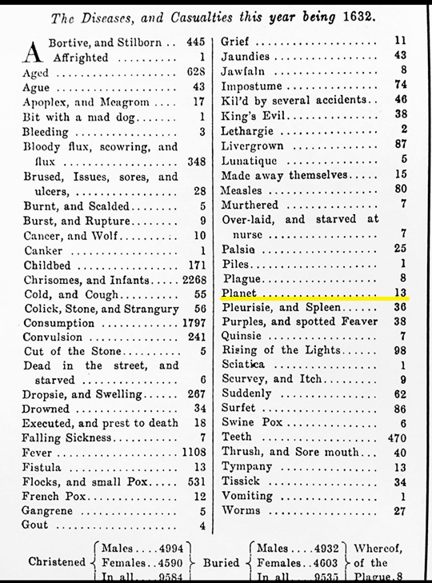

John Graunt compiled the mortality statistics in the City of London in 1632.
Among the terrible losses from infant and childhood diseases and such exotic illnesses as
‘the rising of the lights’ and ‘the King’s evil,’ we find that, of 9,535 deaths, 13 people
succumbed to ‘planet,’ more than died of cancer. I wonder what the symptoms were.
1632年、ジョン・グラントはロンドン市における死亡統計をまとめました。乳幼児の病気や、「rising of the lights（肺の病気の一種）」や「King’s evil（腺病、リンパ節結核）」といった聞き慣れない病気による多数の死者の中に、9,535人の死者のうち13人が「planet（惑星）」を死因として亡くなっていることが記録されています。これは癌による死者数よりも多い数字でした。一体どのような症状だったのでしょうか。
